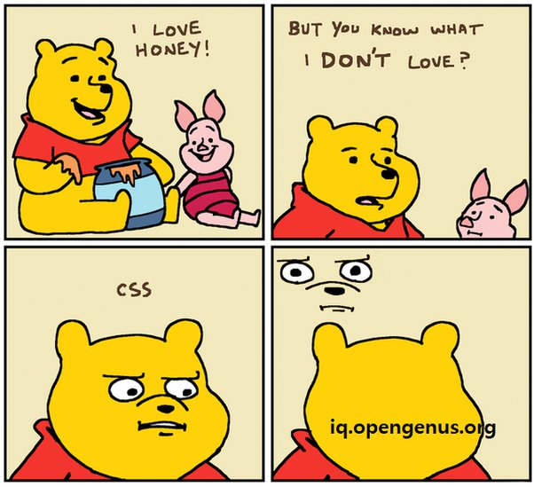

CSS, Cascading Style Sheets, es un lenguaje de hojas de estilos creado para controlar el aspecto o presentación de los documentos electrónicos definidos con HTML y XHTML. CSS es la mejor forma de separar los contenidos y su presentación y es imprescindible para crear páginas web complejas.
Separar la definición de los contenidos y la definición de su aspecto presenta numerosas ventajas, ya que obliga a crear documentos HTML/XHTML bien definidos y con significado completo (también llamados “documentos semánticos”). Además, mejora la accesibilidad del documento, reduce la complejidad de su mantenimiento y permite visualizar el mismo documento en infinidad de dispositivos diferentes.
Al crear una página web, se utiliza en primer lugar el lenguaje HTML/XHTML para marcar los contenidos, es decir, para designar la función de cada elemento dentro de la página: párrafo, titular, texto destacado, tabla, lista de elementos, etc.
Una vez creados los contenidos, se utiliza el lenguaje CSS para definir el aspecto de cada elemento: color, tamaño y tipo de letra del texto, separación horizontal y vertical entre elementos, posición de cada elemento dentro de la página, etc.

Las hojas de estilos aparecieron poco después que el lenguaje de etiquetas SGML, alrededor del año 1970. Desde la creación de SGML, se observó la necesidad de definir un mecanismo que permitiera aplicar de forma consistente diferentes estilos a los documentos electrónicos.
El gran impulso de los lenguajes de hojas de estilos se produjo con el boom de Internet y el crecimiento exponencial del lenguaje HTML para la creación de documentos electrónicos. La guerra de navegadores y la falta de un estándar para la definición de los estilos dificultaban la creación de documentos con la misma apariencia en diferentes navegadores.
El organismo W3C (World Wide Web Consortium), encargado de crear todos los estándares relacionados con la web, propuso la creación de un lenguaje de hojas de estilos específico para el lenguaje HTML y se presentaron nueve propuestas. Las dos propuestas que se tuvieron en cuenta fueron la CHSS (Cascading HTML Style Sheets) y la SSP (Stream-based Style Sheet Proposal).
En 1995, el W3C decidió apostar por el desarrollo y estandarización de CSS y lo añadió a su grupo de trabajo de HTML. A finales de 1996, el W3C publicó la primera recomendación oficial, conocida como “CSS nivel 1″.
A principios de 1997, el W3C decide separar los trabajos del grupo de HTML en tres secciones: el grupo de trabajo de HTML, el grupo de trabajo de DOM y el grupo de trabajo de CSS.
La adopción de CSS por parte de los navegadores ha requerido un largo periodo de tiempo. El mismo año que se publicó CSS 1, Microsoft lanzaba su navegador Internet Explorer 3.0, que disponía de un soporte bastante reducido de CSS. El primer navegador con soporte completo de CSS 1 fue la versión para Mac de Internet Explorer 5, que se publicó en el año 2000. Por el momento, ningún navegador tiene soporte completo de CSS 2.1.
La estructura se basa principalmente en dos elementos conocidos como “selector” y “declaración”. El selector indica a qué elemento se le van a aplicar los estilos y la declaración especifica cuáles son los estilos. Se pueden diferenciar entre distintos tipos de selector:

| Version | Descripcion |
|---|---|
| CSS1 | Fue la primera versión. Surgió en el año 1996 y duró 12 años hasta que llegó la tercera versión. Contiene todas las funcionalidades básicas como la sintaxis, los atributos o las propiedades de las fuentes. |
| CSS2 | Apareció dos años después de la primera versión con el objetivo de seguir mejorando el lenguaje. |
| CSS3 | La versión actual se publicó en el año 2011 y, hasta día de hoy, contiene las especificaciones más completas y amplias. La cantidad de funcionalidades que presenta ha hecho que desaparezca la versión 1 y 2 trayendo además, la división del código en módulos. |